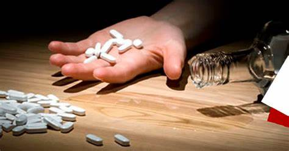

Prevenção do abuso de substâncias

A meta 3.5 dos Objetivos de Desenvolvimento Sustentável (ODS) estabelecida pela Organização das Nações Unidas (ONU) destaca a importância de reforçar a prevenção e o tratamento do abuso de substâncias, incluindo o abuso de drogas entorpecentes e o uso nocivo do álcool. Essa iniciativa reconhece os desafios significativos relacionados à saúde pública e ao bem-estar social associados ao consumo prejudicial de substâncias.
O abuso de substâncias, seja relacionado a drogas ilícitas ou ao consumo nocivo de álcool, representa uma ameaça para a saúde individual e comunitária. A abordagem para atingir essa meta envolve a implementação de medidas preventivas, a promoção da conscientização e a expansão dos serviços de tratamento.
A prevenção do abuso de substâncias é essencial e pode abranger uma variedade de estratégias. Educação e conscientização sobre os riscos associados ao consumo excessivo de álcool e o uso de drogas entorpecentes são fundamentais para capacitar as pessoas a tomar decisões informadas sobre seu comportamento. Além disso, é importante implementar políticas que restrinjam o acesso fácil a substâncias nocivas, bem como apoiar programas de prevenção nas escolas e comunidades.
O tratamento eficaz para aqueles que lutam contra o abuso de substâncias é uma parte crucial dessa meta. Isso envolve a expansão do acesso a serviços de saúde mental, reabilitação e apoio social para aqueles que buscam superar a dependência. Estratégias baseadas na evidência, incluindo terapias comportamentais, apoio medicamentoso quando apropriado, e a promoção de ambientes de recuperação saudáveis, são aspectos fundamentais para ajudar os indivíduos a se recuperarem e reconstruírem suas vidas.
Além disso, a abordagem deve ser holística, considerando não apenas os aspectos médicos da dependência, mas também os fatores sociais, econômicos e culturais que contribuem para o abuso de substâncias. A inclusão de programas de prevenção e tratamento sensíveis às necessidades específicas de diferentes grupos populacionais, incluindo jovens, populações vulneráveis e aqueles em contextos socioeconômicos desfavorecidos, é imperativa.
A colaboração entre governos, organizações de saúde, instituições educacionais e organizações não governamentais é essencial para abordar esse desafio de maneira abrangente. Políticas integradas que combinem prevenção, tratamento e apoio contínuo são fundamentais para criar comunidades mais saudáveis e resilientes.
Em síntese, a meta 3.5 reflete o compromisso global em enfrentar o problema do abuso de substâncias como uma questão de saúde pública. Ao reforçar a prevenção e o tratamento, a comunidade internacional busca criar ambientes que apoiem a recuperação e promovam um estilo de vida saudável, contribuindo assim para a construção de sociedades mais seguras e saudáveis.